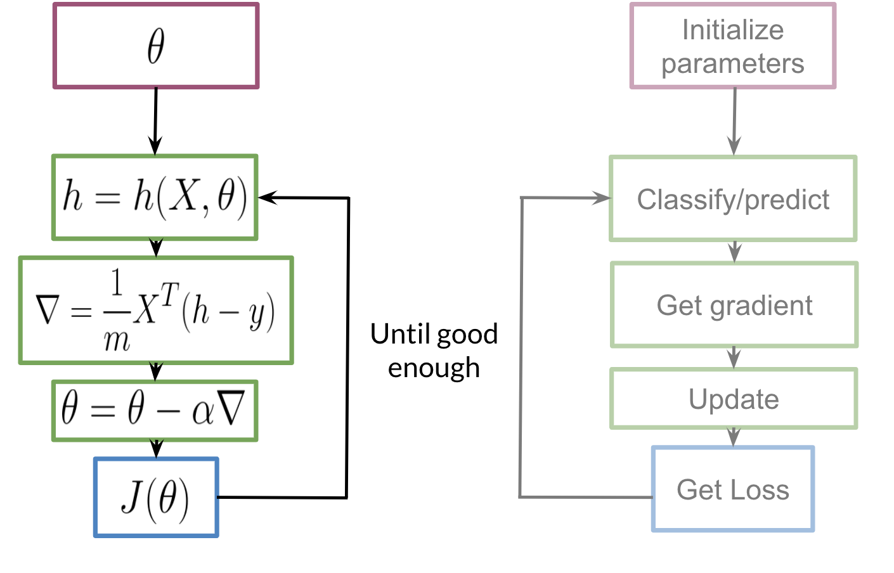
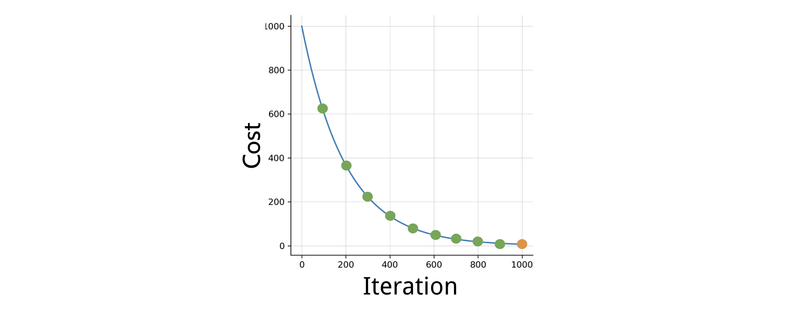

Logistic_Regression: training
To train your logistic regression function, you will do the following:

You initialize your parameter \(\theta\), that you can use in your sigmoid, you then compute the gradient that you will use to update \(\theta\), and then calculate the cost. You keep doing so until good enough.
Note: If you do not know what a gradient is, don't worry about it. I will show you what it is at then end of this week in an optional reading. In a nutshell, the gradient allows you to learn what \(\theta\) \(\theta\) is so that you can predict your tweet sentiment accurately.
Usually you keep training until the cost converges. If you were to plot the number of iterations versus the cost, you should see something like this:
